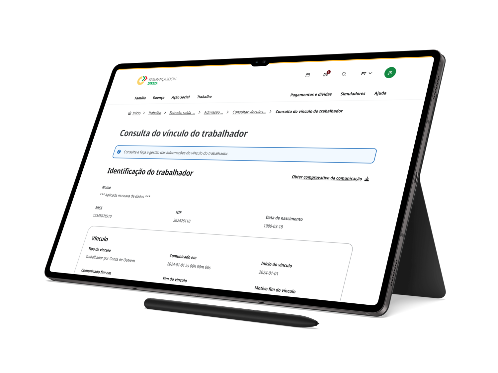
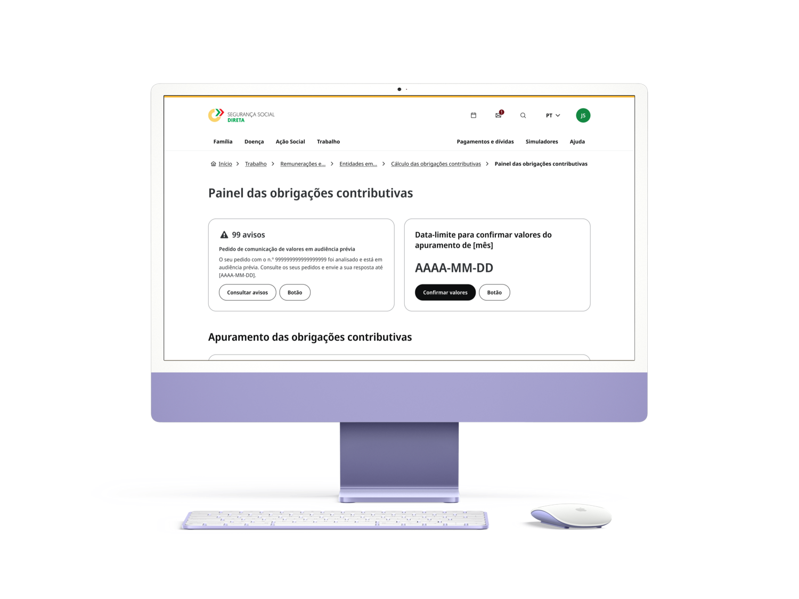
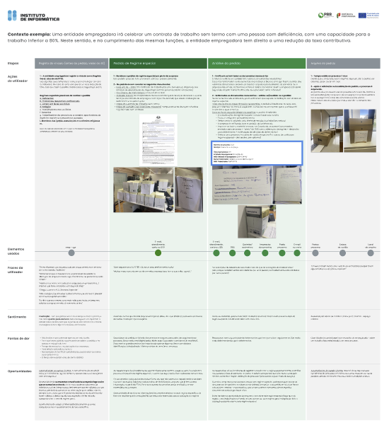
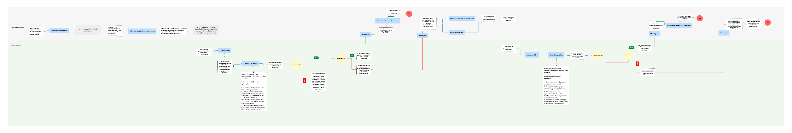
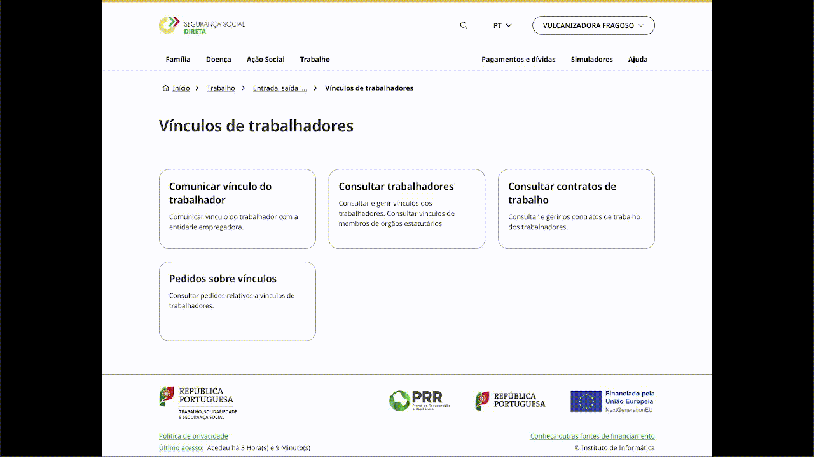
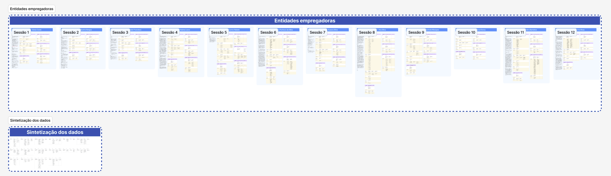
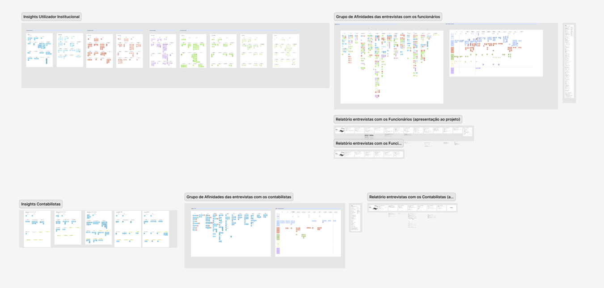
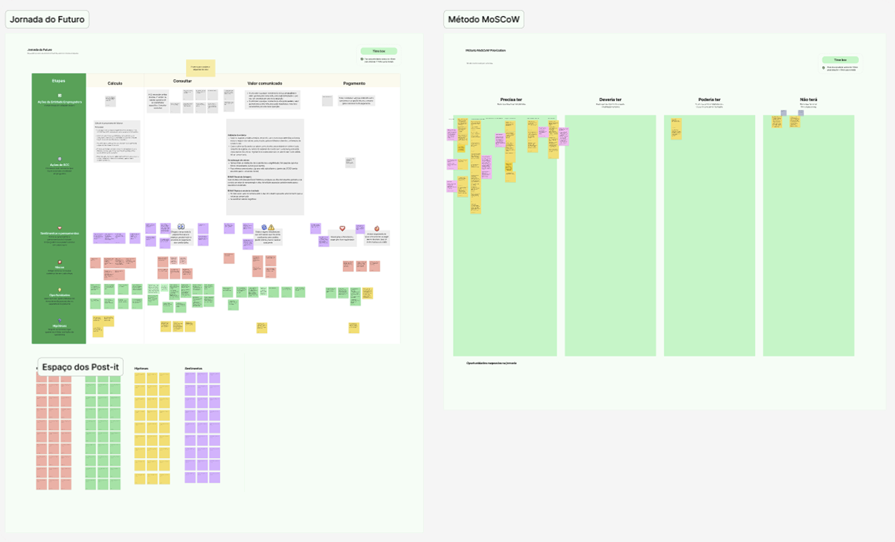
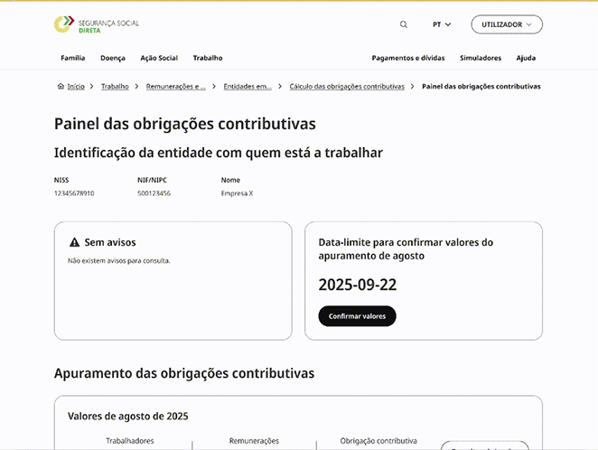
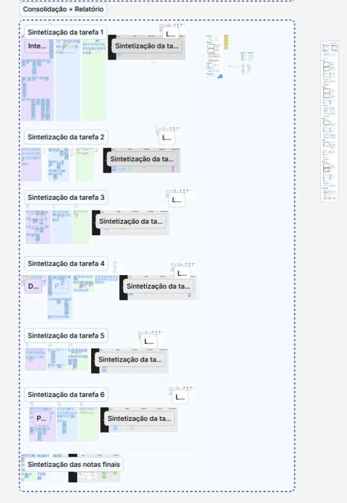

Case study
Autonomy to follow
the requests about
their workers
Managing work contracts · Segurança Social Direta
View case studyAbout
I believe in decisions based on real data, in teams where research has a real voice.
Work

Case study
Managing work contracts · Segurança Social Direta
View case study
Case study
Simplifying the Contribution Cycle · Segurança Social Direta
View case studyIn a conversation, I can show you the decisions that did not fit in a case study: what we tested, what failed and what changed after.
Let's talkProcess
Together, we think about the product goals and define them. We also plan how the design journey connects to the agreed delivery.
The moment of research and data analysis. Here we find hypotheses, pain points and opportunities in the process.
I organise what we collected into journeys, maps and reports. This turns data from many places into design decisions.
A moment of co-creation. We test ideas in a strategic way, and they always follow the product goals.
Medium and high fidelity prototypes, tested with real users. We keep improving them until the solution is clear.
Experience
UX Researcher
Eviden · Instituto de Informática, I.P.
UI/UX Designer
Eviden · Instituto de Informática, I.P.
Product Designer
Boavista Tecnologia
Skills
Education
UNIFATEC · 2023 – 2024
See certificateEBAC · 2021
See certificateStill here?
From Ceará to Lisbon, I followed a path guided by data, strategy and people. My background in Advertising and in marketing automation gave me a clear view: behaviour metrics are very important.
I don't only design nice interfaces; I try to solve product problems. I have led and taken part in full discovery and delivery cycles with Lean Inception, and I have run research with real users.
Today I work on Segurança Social Direta, with the biggest challenge in design: designing for people who cannot choose not to use the service. This responsibility changed the way I work: clear decisions, based on real data, with research leading the strategic decisions.
I am available for product design and user research projects. Write to me and I will tell you how I work.
Let's talkSocial Security is a system created by the government to protect people in situations like illness, unemployment, old age or maternity. It gives financial support and access to essential services. It is also the platform where employers keep their legal obligations up to date.
Challenges
Results
Employers now have the autonomy to ask for changes to their workers' contracts, without opening support tickets.
After the launch, we analysed internal data. We saw a drop in the average time that Social Security needed to handle the requests.
Process overview
Step 1

Main learnings
Step 2

Company needs
Business needs
Step 3

Step 4

Social Security is a system created by the government to protect people in situations like illness, unemployment, old age or maternity. It gives financial support and access to essential services. It is also the platform where employers register and meet their obligations.
Challenge
Results
Employers now have more days to get organised and to correct or add a worker's salary, so they can meet their contribution obligations.
Employers no longer need 10 days to send their workers' salary data to Social Security. Social Security organises this data and calculates the amounts automatically. The employer only needs to confirm the values and create the payment receipt.
Process overview
Step 1

Main learnings
Step 2

Company needs
Business needs
Step 3
Step 4

Step 5

CV
Product Designer · UX Researcher
Lisbon, Portugal910 561 682rayanenlima@gmail.com
I studied Marketing (Advertising), and I have a background in graphic design and inbound marketing. When I worked with digital products, I found my passion for user experience and I moved to UX/UI. As a Product Designer and UX Researcher, I want to build products that solve real problems and add value in a caring and responsible way.
Skills
Tools
Abilities
Languages
Portuguese — native
English — B1
Training